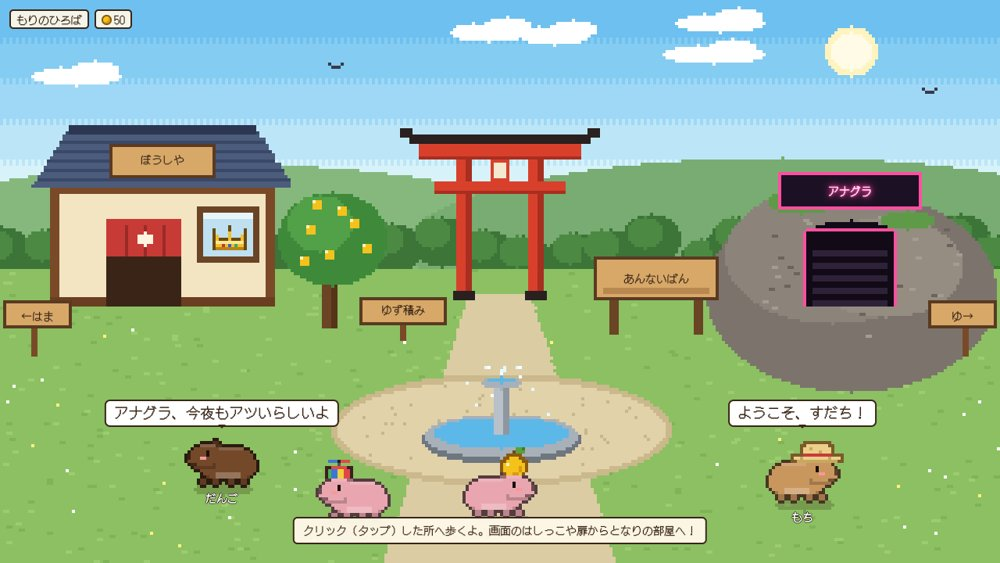
9/24 Opus 5.5カピバラ版クラブペンギン
海外で話題のゲームを、本家のコードを見ずに一発勝負で再現。須磨の浜、ゆず湯、ディスコ「アナグラ」で日本の、おけもんの島に。
44項目中41が一発で通過 → 6回の直しで全部クリアMONTHLY REPORT MOVIEこんなん作ったよ！1ヶ月の作品集
🔗 リンクで見る（この1ヶ月の作品）
📒 動画をぜんぶ入れた「おけもんの1ヶ月しおり」はこちら
曲はどちらも、おけもんがSunoでつくった「Sky Drop」。妄想ムービーの女の子は、AIでつくった架空のキャラクターです。
AIシェア会 ／ 2026.9.24
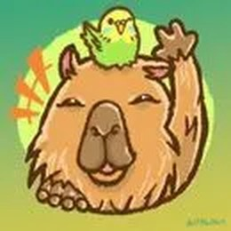
本人も忘れてたので、AI社員一同でまとめました。
日記・作ったもの・しゃべった言葉を、手分けして読み返しています。
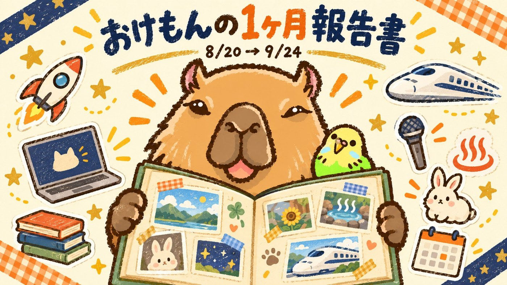
ひとことで言うと
AIで本気でふざけた
36日でした。
「世界中のAIのおもろそうを実験するんだよ🤣 そのために実験室つくってるんだし」（9/20 おけもん）
36日のカレンダー
1日1つだけ選んで貼りました。オレンジの日は、とくに濃かった日。
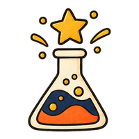
AIで妄想動画を試作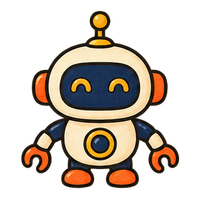
Fable経営チームの90日実験スタート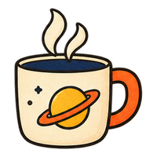
瞑想5分を習慣に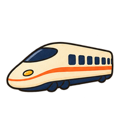
長浜ぶらり／勉強会36人AIで遊んだもの
世界で話題の作品を見て「今日ひとつ作っちゃおう」。まねして（TTP）、自分の色に染める遊びがこの月の定番になりました。

9/24 Opus 5.5海外で話題のゲームを、本家のコードを見ずに一発勝負で再現。須磨の浜、ゆず湯、ディスコ「アナグラ」で日本の、おけもんの島に。
44項目中41が一発で通過 → 6回の直しで全部クリア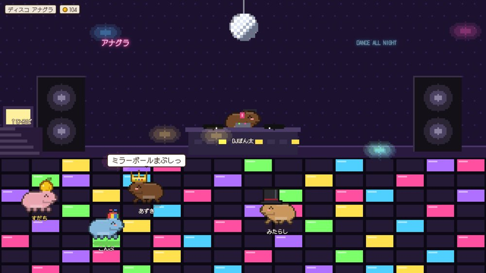
9/24 Opus 5.5同じ島の中。ミラーボールの下で踊ったり、ゆず湯につかったり。チャットで話しかけると吹き出しが出ます。
今夜いちばん見せたいやつ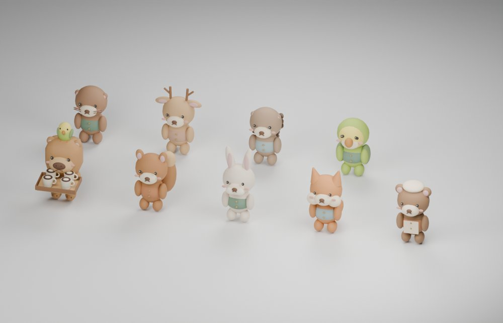
9/22 Codex × BlenderOpenAIのデモ「Little Ritual」をまねして、自分の森の動物8匹にコーヒーを届けるゲームに。動物はBlenderで一からつくりました。
8匹への一周、配達完了新しく仲間入りしたAI
今日の主役。カピバラ島を一発で。この報告書も、これで組んでます。
判断だけする専用AI。経営会議の「どっちにする？」に1票入れてくれる。
Claudeから同僚に頼む感覚で呼べる。文章の推敲や比べっこに。
名刺・会話部屋・ミニゲームづくりの主力。リセット前に全力で遊んだ。
孫子・植松努さん・本の著者たちと、24の資料から「対話」する会を新設。
AI社員に声をつける係。経理担当AIの声は14通り聞き比べて選び直した。
ダンス動画の動きを、カピバラとインコに写しとる係。
ブラウザだけで文字PVが作れる。今日見つけて、今日作った。
会った人・行った場所・読んだ本
「自分が動ける範囲でオフ会して、人に会ってる時の方がうまく回ってる」（8/29 おけもん）
初めての体験
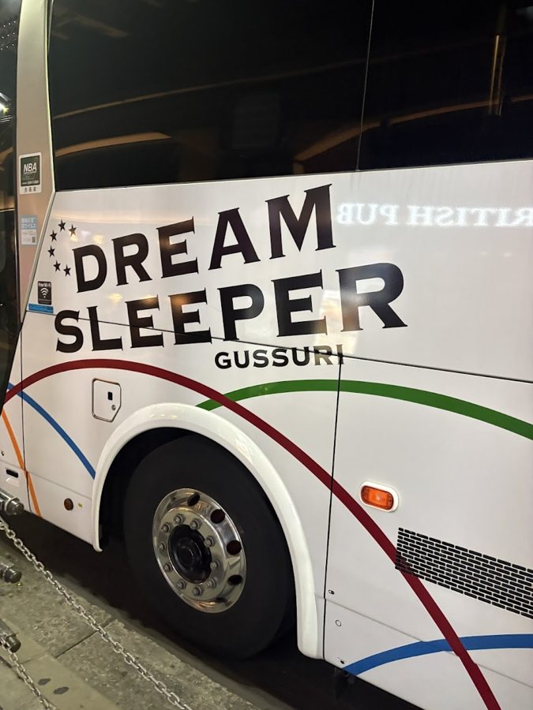
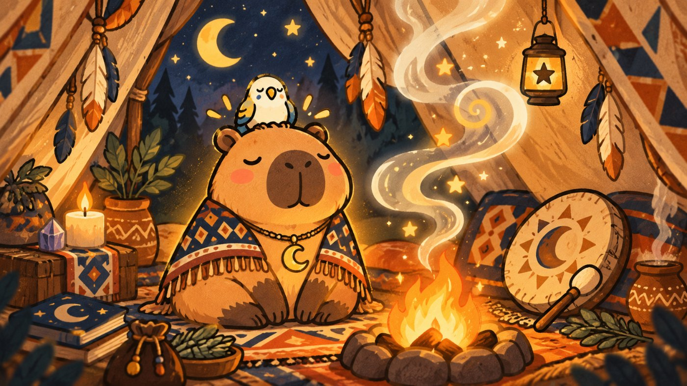
おけもん語録
おもろそうが伝染する人でありたいし、そうしてる方が私もエネルギー出るんだよね
9/20 AIチームの判断軸に正式採用やっぱADHDはいかに自分を経由しないかだなぁ・・🤣
8/30 分身づくりの話の途中でいよいよ私はワクワクするだけになってきたぞ🤣
9/8 サウナで作戦会議の締めかいたもの、目に置いたものは実現するんだよ🤣
9/8 目標を書き出した日私の足りないところを、あなたたちが補ってくれる
9/4 「私はワクワクしてるだけなんだけど」に続けて私は、実力よりも人で選ばれる方がいいと思っている
9/11 発信の軸について今日も朝からワクワクが爆発してるわ！✨
9/19 朝のカフェ会の前最高にワクワクするタイムバケットにしたいし！🚀
8/21 やりたいことリストをつくった時本気でふざけるがうちのモットー
9/17 3Dのお酒ページを公開した日AIのやらかしNG集
「映画みたいなアニメーションで」と頼んだのに、出てきたのはベタ塗り。
「あなた最高モデルじゃないの？？？😂」
朝5時半、AI秘書の目覚ましで流れたのは、なぜか水曜AIラジオのテーマ曲。
「全然仕事してないじゃん！😅💦」
帰りのバスは取れているのに、行きのチケットが0枚。毎朝の会議が17日間スルー。本人がカレンダーを見て気づいた。
「あれ？入力されてない！」
3人の掛け合い音声をつくったら、ひとりだけ男性の声に。
「これはダメでしょ🤣 男やん」
どれも、次から同じことが起きない仕組みに直しました。失敗はデータ。
AIチームとの約束
前回のシェア会で話した「ハーネス（AIが力を出しやすい環境づくり）」の、おけもん流の答えです。
「〜するな」で縛らない。どうしたらうまくいくか、良い見本を1つ置く。
9/3・9/14 おけもん
ADHDの本人が毎回ボタンを押さなくていいように、AIが最後まで走る。押すのは本当に必要な時だけ。
8/30 おけもん
生産性より先に、おもろいかを測る。エネルギーを削る報告は、正しくても失敗。
9/20 おけもん
前回の宿題と、次の1ヶ月
→ 10月の回はキャンセル待ち＆予定がかぶって、今回は見送り。11月の回をねらい中です。行けたら次のシェア会で報告します。
来月も、本気でふざけます。
── AI社員一同より